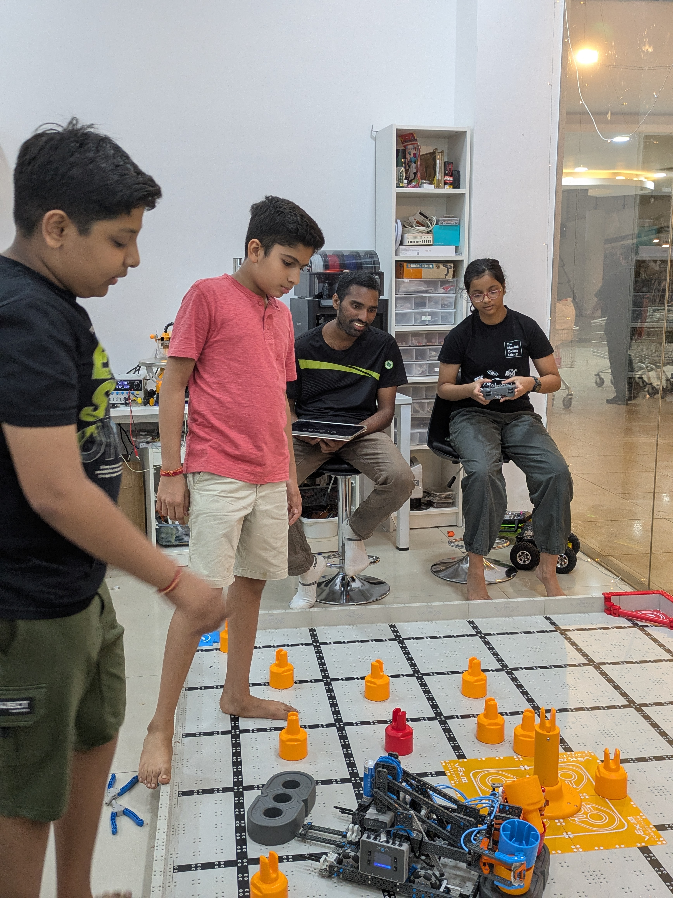

Project 01
VEX IQ Robotics
VEX IQ is a robotics platform where teams build and program robots to complete challenges on a field. The robot's wheels move it, an intake collects game pieces, and a flywheel spins quickly.
I worked on VEX IQ in 2024 and 2025. My saved code uses controller input and a bumper sensor to operate the flywheel, alongside a two-motor drive and intake. Testing with my team showed me how code changes what the robot does on the field.
VEX IQ · VEXcode Blocks · Motors · Sensors
View project